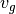
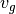
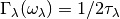
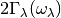
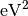

Supercell with displacements are created. Using with --amplitude
option, atomic displacement distances are controlled. With this
option, files for supercells with displacements and disp_fc3.yaml
file are created.
A larger and different supercell size for 2nd order force constants
than that for 3rd order force constants can be specified with this
option. Often interaction between a pair of atoms has longer range in
real space than interaction among three atoms. Therefore to reduce
computational demand, choosing larger supercell size only for 2nd
order force constants may be a good idea.
Using this option with -d option, the structure files
(e.g. POSCAR_FC2-xxxxx or equivalent files for the other
interfaces) and disp_fc2.yaml are created. These are used to
calculate 2nd order force constants for the larger supercell size and
these force calculations have to be done in addition to the usual
force calculations for 3rd order force constants.
phono3py -d --dim="2 2 2" --dim_fc2="4 4 4" -c POSCAR-unitcell
After the force calculations, --cf2 option is used to create
FORCES_FC2.
phono3py --cf2 disp-{001,002}/vasprun.xml
To calculate 2nd order force constants for the larger supercell size,
FORCES_FC2 and disp_fc2.yaml are necessary. Whenever running
phono3py for the larger 2nd order force constants, --dim_fc2
option has to be specified. fc2.hdf5 created as a result of
running phono3py contains the 2nd order force constants with
larger supercell size. The filename is the same as that created in the
usual phono3py run without --dim_fc2 option.
phono3py --dim="2 2 2" --dim_fc2="4 4 4" -c POSCAR-unitcell ... (many options)
Read 2nd order force constants from fc2.hdf5.
Read 3rd order force constants from fc3.hdf5.
These are used to symmetrize second- and third-order force
constants. --sym_fc2 and --sym_fc3r symmetrize those in real
space by the index exchange, respectively, and --tsym symmetrizes
by the translational invariance, respectively.
When those force constants are not read from the hdf5 files,
symmetrized force constants in real space are written into those hdf5
files.
This is used to create FORCES_FC3. disp_fc3.yaml has to be
located at the current directory.
% phono3py --cf3 disp-{00001..00755}/vasprun.xml
This is used to create FORCES_FC2. disp_fc2.yaml has to be
located at the current directory. This is
optional. FORCES_FC2 is necessary to run with --dim_fc2.
% phono3py --cf2 disp_fc2-{00001..00002}/vasprun.xml
This option is used to set elements of third-order force constants
zero when any pair-distance among triplet of atoms is larger than the
cut-off distance. This option may be useful to check interaction range
of third-order force constants.
This option is only used together with -d option. Using this
option, number of supercells with displacements is reduced and a
special disp_fc3.yaml is created.
Cut-off pair distance is used to cut-off configurations of pairs of
displacements. POSCAR-xxxxx are not created if distance between
pair of atoms to be displaced is larger than the cut-off pair
distance. The indexing of POSCAR-xxxxx files is same as the usual
case, i.e., without this option. But using this option, a lot of
indices are missing, which are not necessary to be put for creating
FORCES_THIRD. Only vasprun.xml‘s calculated for these
reduced number of POSCAR-xxxxx have to be given at phono3py --cf3
....
After running VASP calculations,
phono3py --cf3 all_calculated_vasprun_xmls
disp_fc3.yaml may be readable and helpful to understand this
procedure.
Phonon triples are chosen on the grid points on the sampling mesh
specified by this option. This mesh is made along reciprocal
axes and is always Gamma-centered.
Grid points where imaginary part of self energy is calculated. Indices
of grid points are specified by space separated numbers. The mapping
table between grid points to its indices is obtained by running with
--loglevel=2 option.
--ga option can be used instead of --gp option. See --gp
section.
This option is used to specify grid points like --gp option but in
the different way. For example with --mesh="16 16 16", a q-point
of (0.5, 0.5, 0.5) is given by --ga="8 8 8". The values have to be
integers. If you want to specify the point on a path, --ga="0 0 0 1
1 1 2 2 2 3 3 3 ...", where each three values are recogninzed as a
grid point. The grid points given by --ga option are translated to
grid point indices as given by --gp option, and the values given
by --ga option will not be shown in log files.
Numbers of q-point triplets to be calculated for irreducible grid
points for specified sampling mesh numbers are shown. This can be used
to estimate how large a calculation is. Only those for specific grid
points are shown by using with --gp or --ga option.
Run calculation of lattice thermal conductivity tensor with the single
mode relaxation time approximation (RTA) and linearized phonon
Boltzmann equation. Without specifying --gp (or --ga) option,
all necessary phonon lifetime calculations for grid points are
sequentially executed and then thermal conductivity is calculated
under RTA. The thermal conductivity and many related properties are
written into kappa-mxxx.hdf5.
With --gp (or --ga) option,
phonon lifetimes on the specified grid points are calculated. To save
the results, --write_gamma option has to be specified and the
physical properties belonging to the grid
points are written into kappa-mxxx-gx.hdf5.
Phonon-isotope scattering is calculated.. Mass variance parameters are
read from database of the natural abundance data for elements, which
refers Laeter et al., Pure Appl. Chem., 75, 683
(2003)
% phono3py --dim="3 3 2" -v --mesh="32 32 20" -c POSCAR-unitcell --br --isotope
This option is used to include isotope effect by reading specified
mass variance parameters. For example of GaN, this may be set like
--mv="1.97e-4 1.97e-4 0 0". The number of elements has to
correspond to the number of atoms in the primitive cell.
Isotope effect to thermal conductivity may be checked first running
without isotope calculation:
% phono3py --dim="3 3 2" -v --mesh="32 32 20" -c POSCAR-unitcell --br
Then running with isotope calculation:
% phono3py --dim="3 3 2" -v --mesh="32 32 20" -c POSCAR-unitcell --br \
--read_gamma --mv="1.97e-4 1.97e-4 0 0"
In the result hdf5 file, currently isotope scattering strength is not
written out, i.e., gamma is still imaginary part of self energy of
ph-ph scattering.
A most simple boundary scattering treatment is
implemented.  is just used as the scattering rate, where
 is the group velocity and
is just used as the scattering rate, where
 is the group velocity and  is the boundary mean
free path. The value is given in micrometre. The default value, 1
metre, is just used to avoid divergence of phonon lifetime and the
contribution to the thermal conducitivity is considered negligible.
is the boundary mean
free path. The value is given in micrometre. The default value, 1
metre, is just used to avoid divergence of phonon lifetime and the
contribution to the thermal conducitivity is considered negligible.
Temperatures at equal interval are specified by --tmax,
--tmin, --tstep. See phonopy TMAX, TMIN, TSTEP
tags (--tmax, --tmin, --tstep options) at
http://atztogo.github.io/phonopy/setting-tags.html#tprop-tmin-tmax-tstep .
% phono3py --fc3 --fc2 --dim="2 2 2" -v --mesh="11 11 11" \
-c POSCAR-unitcell --br --tmin=100 --tmax=1000 --tstep=50
Specific temperatures are given by --ts.
% phono3py --fc3 --fc2 --dim="2 2 2" -v --mesh="11 11 11" \
-c POSCAR-unitcell --br --ts="200 300 400"
Non-analytical term correction for harmonic phonons. Like as phonopy,
BORN file has to be put on the same directory. Always the default
value of unit conversion factor is used even if it is written in the
first line of BORN file.
Imaginary parts of self energy at harmonic phonon frequencies
 are written
into file in hdf5 format. The result is written into
kappa-mxxx-dx-gx.hdf5 or kappa-mxxx-dx-gx-bx.hdf5 with
--bi option. With --sigma option, -sx is inserted in front
of .hdf5.
Imaginary parts of self energy at harmonic phonon frequencies
are read from kappa file in hdf5 format. Initially the usual
result file of kappa-mxxx-dx(-sx).hdf5 is searched. Unless it is
found, it tries to read kappa file for each grid point,
kappa-mxxx-dx-gx(-sx).hdf5. Then, similarly,
kappa-mxxx-dx-gx(-sx).hdf5 not found,
kappa-mxxx-dx-gx-bx(-sx).hdf5 files for band indices are searched.
Q-point triplet contributions to imaginary part of self energy are
written into gamma_detail-mxxx-gx-sx.hdf5 file. This option is
only valid in calculation of imaginary part of self energy (--ise)
or linewidth (--lw) with --gp or --ga options.
In the output file in hdf5, following keys are used to extract the
detailed information.
gamma_detail for --ise |
(temperature, sampling frequency point, band1, band2, band3, symmetry reduced set of triplets at a grid point) in THz |
gamma_detail for --lw |
(temperature, band1, band2, band3, symmetry reduced set of triplets at a grid point) in THz |
| mesh |
Numbers of sampling mesh along reciprocal axes. |
frequency_point for --ise |
Sampling frequency points in THz, i.e.,  in in  |
| temperature |
Temperatures in K |
| triplet |
(symmetry reduced set of triplets at a grid point, 3), Triplets are given by the grid point indices (see below). |
| weight |
Weight of each triplet to imaginary part of self energy |
Q-points corresponding to grid point indices are calculated from
grid addresses and sampling mesh numbers given in
grid_address-mxxx.hdf5 that is obtained by --wgp option. A
python script to obtain q-point triplets is shown below.
import h5py
import numpy as np
f = h5py.File("gamma_detail-mxxx-gx-sx.hdf5")
g = h5py.File("grid_address-mxxx.hdf5")
grid_address = f['grid_address'][:]
triplets = g['triplet'][:]
mesh = f['mesh'][:]
q = grid_address[triplets] / np.array(mesh, dtype='double')
Imaginary part of self energy or linewidth/2 is recovered by the
following script:
import h5py
import numpy as np
f = h5py.File("gamma_detail-mxxx-gx-sx.hdf5")
temp = 1 # index of temperature
gamma_detail = f['gamma_detail'][:].sum(axis=-2).sum(axis=-2)
weight = f['weight'][:]
print np.dot(gamma_detail[temp], weight).sum(axis=-1) / gamma_detail.shape[-2]
Linewidth  is calculated with
respect to temperature. The output is written to
linewidth-mxxxx-gx-sx-bx.dat in THz (without  ).
).
% phono3py --fc3 --fc2 --dim="2 2 2" --mesh="16 16 16" -c POSCAR-unitcell \
--nac --q_direction="1 0 0" --gp=0 --lw --bi="4 5, 6"
Two classes of joint density of states (JDOS) are calculated. The
result is written into jdos-mxxxxxx-gx.dat in THz (without
). The first column is the frequency, and the second and
third columns are the values given as follows, respectively,
% phono3py --fc2 --dim="2 2 2" -c POSCAR-unitcell --mesh="16 16 16" \
--nac --jdos --ga="0 0 0 8 8 8"
When temperatures are specified, two classes of weighted JDOS are
calculated. The result is written into jdos-mxxxxxx-gx-txxx.dat,
where txxx shows the temperature. The first column is the
frequency, and the second and third columns are the values given as
follows, respectively,
% phono3py --fc2 --dim="2 2 2" -c POSCAR-unitcell --mesh="16 16 16" \
--nac --jdos --ga="0 0 0 8 8 8" --ts=300
For spectrum like calculations of imaginary part of self energy and
JDOS, number of sampling frequency points is controlled by
--num_freq_points or --freq_pitch.
Specify band indices. The output file name will be, e.g.,
gammas-mxxxxxx-gxx-bx.dat where bxbx... shows the band indices
used to be averaged. The calculated values at indices separated by
space are averaged, and those separated by comma are separately
calculated.
% phono3py --fc3 --fc2 --dim="2 2 2" --mesh="16 16 16" \
-c POSCAR-unitcell --nac --gp="34" --bi="4 5, 6"
After version 1.10.5, for RTA thermal conductivity calculation with
using the linear tetrahedron method, only necessary part of
phonon-phonon interaction strengh among phonons,
 , is
calculated due to delta functions in calculation of
,
, is
calculated due to delta functions in calculation of
,
But specifying this option, full elements of phonon-phonon interaction
strengh among phonons are calculated and averaged phonon-phonon
interaction strength ( ) is also given.
) is also given.
Averaged phonon-phonon interaction strength ()
is used to calculate imaginary part of self energy in thermal
conductivity calculation. This option works
only when --read_gamma and --br options are activated where
the averaged phonon-phonon interaction that is read from
kappa-mxxxxx.hdf5 file is used if it exists in the file. Therefore the
averaged phonon-phonon interaction has to be stored before using this
option (see –full_pp: Calculate all elements of phonon-phonon interaction strength). The calculation result
overwrites kappa-mxxxxx.hdf5 file. Therefore to use this
option together with -o option is strongly recommended.
First, run full conductivity calculation,
% phono3py --dim="3 3 2" -v --mesh="32 32 20" -c POSCAR-unitcell --br
Then
% phono3py --dim="3 3 2" -v --mesh="32 32 20" -c POSCAR-unitcell --br \
--read_gamma --ave_pp -o ave_pp
Averaged phonon-phonon interaction () is
replaced by this constant value in thermal conductivity
calculation. This option works only when --br options are
activated. Therefore third-order force constants are not necessary to
input. The physical unit of the value is .
% phono3py --dim="3 3 2" -v --mesh="32 32 20" -c POSCAR-unitcell --br \
--const_ave_pp=1e-10
Mode-Gruneisen-parameters are calculated from fc3.
Mesh sampling mode:
% phono3py --fc3 --fc2 --dim="2 2 2" -v --mesh="16 16 16"
-c POSCAR-unitcell --nac --gruneisen
Band path mode:
% phono3py --fc3 --fc2 --dim="2 2 2" -v \
-c POSCAR-unitcell --nac --gruneisen --band="0 0 0 0 0 1/2"

 value of Gaussian function for smearing when
calculating imaginary part of self energy. See the detail at
value of Gaussian function for smearing when
calculating imaginary part of self energy. See the detail at
![&N_2^{(1)}(\mathbf{q}, \omega) = \frac{1}{N}
\sum_{\lambda'\lambda''} \Delta(-\mathbf{q}+\mathbf{q}'+\mathbf{q}'')
(n_{\lambda'} - n_{\lambda''}) [ \delta( \omega + \omega_{\lambda'} -
\omega_{\lambda''}) - \delta( \omega - \omega_{\lambda'} +
\omega_{\lambda''})], \\
&N_2^{(2)}(\mathbf{q}, \omega) = \frac{1}{N}
\sum_{\lambda'\lambda''} \Delta(-\mathbf{q}+\mathbf{q}'+\mathbf{q}'')
(n_{\lambda'}+ n_{\lambda''}+1) \delta( \omega - \omega_{\lambda'} -
\omega_{\lambda''}).](_images/math/bea7dc5938d3ac2b3a7e2d2ff83626c1112f11ad.png)